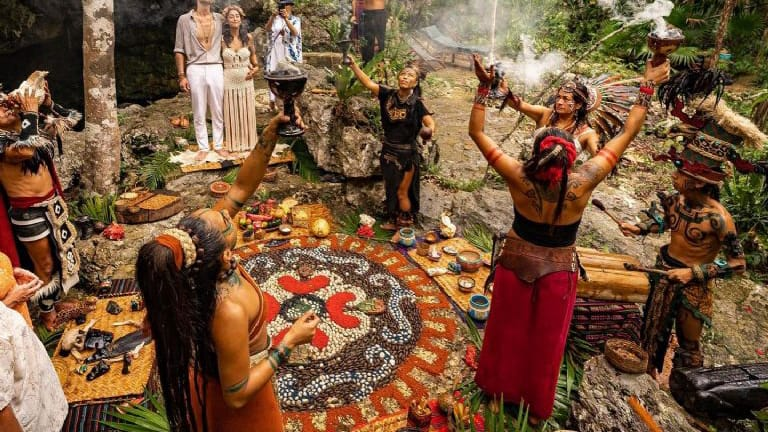
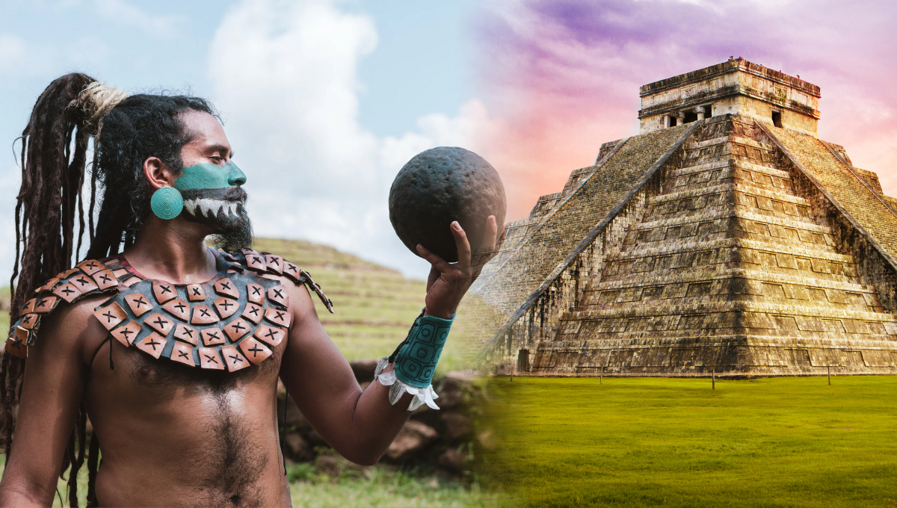
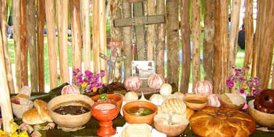

HISTORIA

La historia de la antigua cultura maya tuvo una duración de casi 3500 años. Los primeros pueblos agrícolas mayas
Período Preclásico (2000 a. C. a 250 d. C.). En esta etapa surgieron los primeros asentamientos mayas a lo largo de la franja del Pacífico y luego del Atlántico.
Lentamente estos se convirtieron en las primeras ciudades de la región: Nakbé, Tikal, Dzibilchaltún, El Mirador, Kaminaljuyú, entre otras. Este período se divide en tres subperíodos Preclásico temprano (2000-1000 a. C.) Preclásico medio (1000-350 a.C.) y Preclásico tardío (350 a. C.-250 d. C.). En este último se produjo el primer florecimiento cultural de los mayas, y hacia el siglo I d. C. su primer colapso. Muchas de sus grandes ciudades fueron entonces abandonadas, por motivos hasta hoy desconocidos.
Período Clásico (250 a 900 d. C.). En este período se produjo un renacimiento de la cultura maya. Fue una época de esplendor en la que surgieron grandes centros ceremoniales, como Chichen Itzá y Uxmal, y adquirió gran importancia la ciudad de Tikal. Fue también un período de grandes guerra entre las ciudades mayas, que provocaron el ascenso y la caída de diversas dinastías gobernantes. Con el tiempo, la guerra y otros factores condujeron a un nuevo colapso político, que supuso el abandono de las ciudades en favor de las zonas rurales y una concentración de
la actividad en el norte de la península de Yucatán. Este período se divide a su vez en tres subperíodos: Clásico temprano (250-550 d. C.), Clásico tardío (550-830 d. C.) y Clásico terminal (830-900 d. C.).
Período Posclásico (900 a 1524 d. C.). La cultura maya perduró luego de la caída de las gra
ndes ciudades, especialmente en territorios elevados o cerca de fuentes de agua, donde se organizaron Estados mayas. Algunas ciudades abandonadas fueron ocupadas por poblaciones toltecas. Cuando llegaron los conquistadores españoles, en el norte de Yucatán existían dieciséis Estados mayas, debilitados por sus luchas internas pero difíciles de conquistar. La conquista comenzó en 1524 y el último Estado maya independiente cayó ante los españoles en 1697.

La historia de la cultura maya es muy extensa y compleja, ya que se desarrolló durante más de 3,000 años en diferentes regiones de Mesoamérica. Para entenderla mejor, se divide en varias etapas que muestran cómo evolucionó esta gran civilización:
Periodo Preclásico (2000 a.C. – 250 d.C.)
En este periodo se originaron los primeros grupos mayas. Al inicio eran comunidades pequeñas que dependían de la caza, la pesca y la recolección, pero con el tiempo comenzaron a practicar la agricultura, especialmente del maíz, que se convirtió en la base de su alimentación.
Durante esta etapa surgieron las primeras aldeas y centros ceremoniales. Uno de los sitios más importantes fue El Mirador, donde se construyeron enormes pirámides, lo que demuestra que ya existía una organización social avanzada. También empezaron a desarrollarse la religión, las primeras formas de escritura y el calendario.
Periodo Clásico (250 – 900 d.C.)
Este fue el momento de mayor esplendor de la civilización maya. Se desarrollaron grandes ciudades-estado independientes, cada una con su propio gobernante.
Algunas de las ciudades más importantes fueron:

Tikal
Palenque
Copán
Calakmul
En este periodo, los mayas lograron grandes avances:
Matemáticas: desarrollaron el concepto del cero.
Astronomía: observaron con precisión los movimientos de los astros.
Escritura: crearon un sistema jeroglífico muy avanzado.
Arquitectura: construyeron templos, palacios y pirámides monumentales.
También fue una época de constantes guerras entre ciudades por poder y territorio. Hacia el final del periodo, muchas ciudades fueron abandonadas.
Este fenómeno se conoce como el colapso maya, y se cree que fue causado por factores como sequías, guerras, sobrepoblación y agotamiento de recursos.
Periodo Posclásico (900 – 1521 d.C.)
Después del colapso del Clásico, la actividad maya se concentró principalmente en el norte de la península de Yucatán.
Destacaron ciudades como:
En esta etapa hubo más comercio y contacto con otros pueblos de Mesoamérica, como los toltecas. La organización política cambió, volviéndose más militarista y menos centrada en el poder divino de los gobernantes.
Llegada de los españoles (siglo XVI)
Cuando los españoles llegaron a América en el siglo XVI, los mayas no formaban un solo imperio, sino que estaban divididos en diferentes ciudades-estado.
Uno de los momentos clave fue la conquista liderada por Hernán Cortés y otros capitanes. Sin embargo, la conquista de los mayas fue más difícil y larga que la de otros pueblos, debido a su organización descentralizada y la resistencia indígena.
La última ciudad maya en caer fue Tayasal en 1697, mucho después de la caída de otros grandes imperios.